<!DOCTYPE html>
<html lang="en">
<head>
    <meta charset="utf-8" />
    <meta name="viewport" content="width=device-width, initial-scale=1.0, maximum-scale=1.0, user-scalable=no" />

    <title></title>
    <link rel="stylesheet" href="dist/reset.css">
    <link rel="stylesheet" href="dist/reveal.css" />
    <link rel="stylesheet" href="css/slides-extended.css" />
    <link rel="stylesheet" href="dist/theme/moon.css" id="theme" />
    <link rel="stylesheet" href="plugin/highlight/zenburn.css" />
    <link rel="stylesheet" href="plugin/customcontrols/style.css">


    <link rel="stylesheet" href="css/font.css" />
    <link rel="stylesheet" href="css/MoreHighlightStyle.css" />

    <script defer src="dist/fontawesome/all.min.js"></script>

    <script type="text/javascript">
        function pageInIframe() {
            return (window.location !== window.parent.location);
        }

        let forgetPop = true;
        function onPopState(event) {
            if(forgetPop){
                forgetPop = false;
            } else if( pageInIframe()) {
                parent.postMessage(event.target.location.href, "app://obsidian.md");
            }
        }
        window.onpopstate = onPopState;
        window.onmessage = event => {
            if(event.data == "reload"){
                window.document.location.reload();
            }
            forgetPop = true;
        }

        function fitElements() {
            const itemsToFit = document.getElementsByClassName('fitText');
            for (const item in itemsToFit) {
                if (Object.hasOwnProperty.call(itemsToFit, item)) {
                    const element = itemsToFit[item];
                    fitElement(element, 1, 1000);
                    element.classList.remove('fitText');
                }
            }
        }

        function fitElement(element, start, end) {

            let size = (end + start) / 2;
            element.style.fontSize = `${size}px`;

            if (Math.abs(start - end) < 1) {
                while (element.scrollHeight > element.offsetHeight) {
                    size--;
                    element.style.fontSize = `${size}px`;
                }
                return;
            }

            if (element.scrollHeight > element.offsetHeight) {
                fitElement(element, start, size);
            } else {
                fitElement(element, size, end);
            }
        }


        document.onreadystatechange = () => {
            fitElements();
            if (document.readyState === 'complete') {
                if (pageInIframe() && window.location.href.indexOf("?export") != -1){
                    parent.postMessage(event.target.location.href, "app://obsidian.md");
                }
                if (window.location.href.indexOf("print-pdf") != -1){
                    let stateCheck = setInterval(() => {
                        clearInterval(stateCheck);
                        window.print();
                    }, 250);
                }
            }
        };
    </script>
</head>

<body>
    <div class="reveal">
        <div class="slides"><section ><section data-markdown><script type="text/template"><!-- .slide: class="drop" data-background-gradient="linear-gradient(to right, #2C5364, #203A43, #0F2027)" data-background-opacity="1" data-background-image="img/简笔画-小人儿.svg" -->
<div class="" style="position: absolute; left: 0px; top: 0px; height: 800px; width: 1280px; min-height: 800px; display: flex; flex-direction: column; align-items: center; justify-content: center" absolute="true">

<style>
#title {
    background-color: rgba(255, 255, 255, 0.1);
    padding: 10px;
    border-radius: 8;
    border-color: rgba(32, 58, 67, 0.5);
    color: rgb(255, 255, 255);
    text-align: left;
    margin: auto;
    font-family: "Microsoft YaHei";
}

#subtitle {
	color:#e6fcf5;
	font-style: italic; /* 设置文本为斜体 */
	font-weight: bold; /* 设置文本为粗体 */
	font-family: "LXGW WenKai Screen", "Microsoft YaHei";
}

#date {
	font-family:'Nanum Pen Script'; 
	font-size:1.8em;
	color:#616161;
	vertical-align:top;
	font-weight:400;
}

</style>
<!-- CSS 设置结束 -->


<div class="" style="position: absolute; left: 0%; top: 30%; height: 40%; width: 100%; display: flex; flex-direction: column; align-items: center; justify-content: center" id="title">

<div class="block">

全球架构师峰会 2024
</div>

<!-- .element: id="subtitle" -->

<div class="block">

# ArchSummit 深圳 2024
</div>


02 | _**技术进展跟踪**_ | InfoQ ArchSummit


</div>

<div class="" style="position: absolute; left: 0%; top: 60%; height: 40%; width: 100%; display: flex; flex-direction: column; align-items: center; justify-content: center" id="date">

<div class="block">

<i class="fab fa-github" ></i>  @twotwo
2024-07
</div>


</div>
</div></script></section><section data-markdown><script type="text/template"><!-- .slide: class="drop" -->
<div class="" style="position: absolute; left: 0px; top: 0px; height: 800px; width: 1280px; min-height: 800px; display: flex; flex-direction: column; align-items: center; justify-content: center" absolute="true">

<style>
#outline {
	color:#e6fcf5;
	font-family: "LXGW WenKai Screen", "Microsoft YaHei";
}
</style>
<!-- CSS 设置结束 -->
<div class="" style="position: absolute; left: 0%; top: 5%; height: 10%; width: 100%; display: flex; flex-direction: column; align-items: flex-start; justify-content: space-evenly" align="left">


# 日程 6/14~6/15


</div>

<div class="has-light-background" style="background-color: rgba(132, 190, 240, 0.9); position: absolute; left: 0%; top: 0%; height: 100%; width: 25%; display: flex; flex-direction: column; align-items: center; justify-content: center" id="outline">

<div class="block">

### 主题演讲
1. [大会介绍](obsidian://open?vault=slides&file=%E8%B5%B5%E9%92%B0%E8%8E%B9-AI%20%E6%97%B6%E4%BB%A3%EF%BC%8C%E6%9E%B6%E6%9E%84%E5%85%88%E8%A1%8C.pdf)<sup id="fnref:keynote" role="doc-noteref">1</sup>
2. 丁宇
3. 曹伟
4. Scott Shaw
5. 会议日程<sup id="fnref:schedule" role="doc-noteref">2</sup>
6. ~~--~~
</div>


</div>

<div class="has-light-background" style="background-color: rgba(111, 179, 238, 0.9); position: absolute; left: 25%; top: 0%; height: 100%; width: 25%; display: flex; flex-direction: column; align-items: center; justify-content: center" id="outline">

<div class="block">

### 专题论坛
1. <mark class="more-highlight-half orange-highlighter">高可用架构</mark>
2. AIOps
3. 大模型基础框架
4. <mark class="more-highlight-half orange-highlighter">智算平台</mark>
5. 成本优先的架构
6. AI 助力工业/制造<!-- .element: style="font-size: 36px" -->
</div>


</div>

<div class="has-light-background" style="background-color: rgba(91, 168, 236, 0.9); position: absolute; left: 50%; top: 0%; height: 100%; width: 25%; display: flex; flex-direction: column; align-items: center; justify-content: center" id="outline">

<div class="block">

### 专题论坛
1. 大模型中台
2. <mark class="more-highlight-half orange-highlighter">LLM as OS</mark>
3. FinTeck
4. 商业价值
5. 架构师成长
6. 低代码
</div>


</div>

<div class="has-light-background" style="background-color: rgba(70, 157, 233, 0.9); position: absolute; left: 75%; top: 0%; height: 100%; width: 25%; display: flex; flex-direction: column; align-items: center; justify-content: center" id="outline">

<div class="block">

### 专题论坛
1. Data + AI
2. 业务平台架构
3. <mark class="more-highlight-half orange-highlighter">高效算力基建</mark>
4. AI 时代的安全
5. 大模型应用
6. ~~--~~
</div>


</div>
<div class="footnotes" role="doc-endnotes">
<ol>
</ol>
</div>
</div>

<aside class="notes"><p>1 个主论坛 + 17 个专题论坛
P8 大模型技能图谱</p>
</aside></script></section><section data-markdown><script type="text/template"><!-- .slide: class="drop" -->
<div class="" style="position: absolute; left: 0px; top: 0px; height: 800px; width: 1280px; min-height: 800px; display: flex; flex-direction: column; align-items: center; justify-content: center" absolute="true">

<style>
#outline {
	color:#e6fcf5;
	font-family: "LXGW WenKai Screen", "Microsoft YaHei";
}
.horizontal_dotted_line {
  border-bottom: 2px dotted gray;
}
</style>
<!-- CSS 设置结束
<div class="" style="position: absolute; left: 0%; top: 5%; height: 10%; width: 100%; display: flex; flex-direction: column; align-items: flex-start; justify-content: space-evenly" align="left">


## 收获总结 <i class="fas fa-book-reader" ></i>


</div>

<div class="" style="position: absolute; left: 0%; top: 0%; height: 100%; width: 25%; display: flex; flex-direction: column; align-items: center; justify-content: center" id="outline">

<div class="block">

<mark class="more-highlight orange-highlighter">最新技术趋势</mark>

K8s 生态正在替换 OpenStack 的 IaaS 服务
</div>


</div>

<div class="has-light-background" style="background-color: rgba(111, 179, 238, 0.9); position: absolute; left: 25%; top: 0%; height: 100%; width: 25%; display: flex; flex-direction: column; align-items: center; justify-content: center" id="outline">

<div class="block">

<mark class="more-highlight yellow-highlighter">智算平台建设</mark>

参考百度平台架构和 Hugging Face

</div>


</div>

<div class="has-light-background" style="background-color: rgba(91, 168, 236, 0.9); position: absolute; left: 50%; top: 0%; height: 100%; width: 25%; display: flex; flex-direction: column; align-items: center; justify-content: center" id="outline">

<div class="block">

<mark class="more-highlight green-highlighter">构建算力基础设施的技术策略</mark>

参考算力基建论坛，重点偏向混合部署
</div>


<div class="block">

<mark class="more-highlight green-highlighter">构建算力基础设施的技术策略</mark>

参考算力基建论坛，重点偏向混合部署
</div>


</div>

<div class="has-light-background" style="background-color: rgba(70, 157, 233, 0.9); position: absolute; left: 75%; top: 0%; height: 100%; width: 25%; display: flex; flex-direction: column; align-items: center; justify-content: center" id="outline">

<div class="block">

<mark class="more-highlight pink-highlighter">高可用架构</mark>

重点关注云边部署
</div>


<div class="block">

<mark class="more-highlight pink-highlighter">高可用架构</mark>

重点关注云边部署
</div>


</div>
 -->

<div class="" style="padding: 0 20px; box-sizing: border-box; position: absolute; left: 0%; top: 0%; height: 10%; width: 100%; display: flex; flex-direction: column; align-items: flex-start; justify-content: space-evenly" align="left">


## 收获总结 <i class="fas fa-book-reader" ></i>


</div>
<div class="horizontal_dotted_line" style="position: absolute; left: 3%; top: 11%; height: 0%; width: 94%; display: flex; flex-direction: column; align-items: center; justify-content: center" >

</div>

<div class="" style="border-radius: 15px; position: absolute; left: 0%; top: 15%; height: 75%; width: 48%; display: flex; flex-direction: column; align-items: center; justify-content: center" >
</div>
<div class="" style="position: absolute; left: 1%; top: 17%; height: 71%; width: 46%; display: flex; flex-direction: column; align-items: center; justify-content: center" >


</div>

<div class="" style="position: absolute; left: 36%; top: 15%; height: 19%; width: 63%; display: flex; flex-direction: column; align-items: flex-start; justify-content: space-evenly" align="left">

<div class="block">

<mark class="more-highlight orange-highlighter">最新技术趋势</mark>

K8s 生态正在替换 OpenStack 的 IaaS 服务
</div>


</div>
<div class="" style="position: absolute; left: 45%; top: 35%; height: 19%; width: 54%; display: flex; flex-direction: column; align-items: flex-start; justify-content: space-evenly" align="left">

<div class="block">

<mark class="more-highlight yellow-highlighter">智算平台建设</mark>

参考百度平台架构和 Hugging Face

</div>


</div>
<div class="" style="position: absolute; left: 45%; top: 55%; height: 19%; width: 54%; display: flex; flex-direction: column; align-items: flex-start; justify-content: space-evenly" align="left">

<div class="block">

<mark class="more-highlight green-highlighter">构建算力基础设施的技术策略</mark>

参考算力基建论坛，重点偏向混合部署
</div>


</div>
<div class="" style="position: absolute; left: 40%; top: 75%; height: 19%; width: 44%; display: flex; flex-direction: column; align-items: flex-start; justify-content: space-evenly" align="left">

<div class="block">

<mark class="more-highlight pink-highlighter">高可用架构</mark>

重点关注云边部署
</div>


</div>


<!-- http://xhslink.com/xS1w1P -->
</div></script></section></section><section ><section data-markdown><script type="text/template"><!-- .slide: class="drop" template="" -->
<div class="" style="position: absolute; left: 0px; top: 0px; height: 800px; width: 1280px; min-height: 800px; display: flex; flex-direction: column; align-items: center; justify-content: center" absolute="true">

# 1. 主题演讲

[AI编程如何颠覆生产力](https://archsummit.infoq.cn/2024/shenzhen/presentation/5718) 丁宇（叔同）
- 阿里巴巴 /研究员，阿里云云原生应用平台负责人

[K8s 上的数据库私有云之旅](https://archsummit.infoq.cn/2024/shenzhen/presentation/5896)  曹伟
- 杭州云猿生数据 /创始人兼CEO

[内部技术团队工程平台成功实践](https://archsummit.infoq.cn/2024/shenzhen/presentation/5750) Scott Shaw
- Thoughtworks /亚太区 CTO
</div>

<aside class="notes"><h3 id="engineering-platforms-in-practice">Engineering Platforms in Practice</h3>
</aside></script></section><section data-markdown><script type="text/template"><!-- .slide: class="drop" template="" -->
<div class="" style="position: absolute; left: 0px; top: 0px; height: 800px; width: 1280px; min-height: 800px; display: flex; flex-direction: column; align-items: center; justify-content: center" absolute="true">

## 云原生和K8s技术 by 曹伟

1. 私有云正在从 OpenStack 时代全面进化到 k8s
2. K8s 发展带动 私有云 技术水平追赶 公共云
3. K8s 正在统一公共云和私有云的 PaaS 系统
</div></script></section><section data-markdown><script type="text/template"><!-- .slide: class="drop" template="" -->
<div class="" style="position: absolute; left: 0px; top: 0px; height: 800px; width: 1280px; min-height: 800px; display: flex; flex-direction: column; align-items: center; justify-content: center" absolute="true">

## K8s: 构建 PaaS 的基础

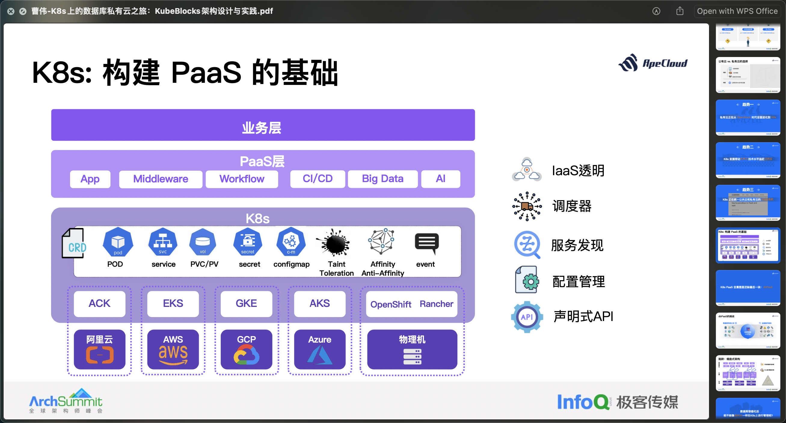
</div></script></section><section data-markdown><script type="text/template"><!-- .slide: class="drop" template="" -->
<div class="" style="position: absolute; left: 0px; top: 0px; height: 800px; width: 1280px; min-height: 800px; display: flex; flex-direction: column; align-items: center; justify-content: center" absolute="true">

## KubeBlocks 已经集成了35种数据库引擎

https://github.com/apecloud/kubeblocks-addons/tree/main/addons

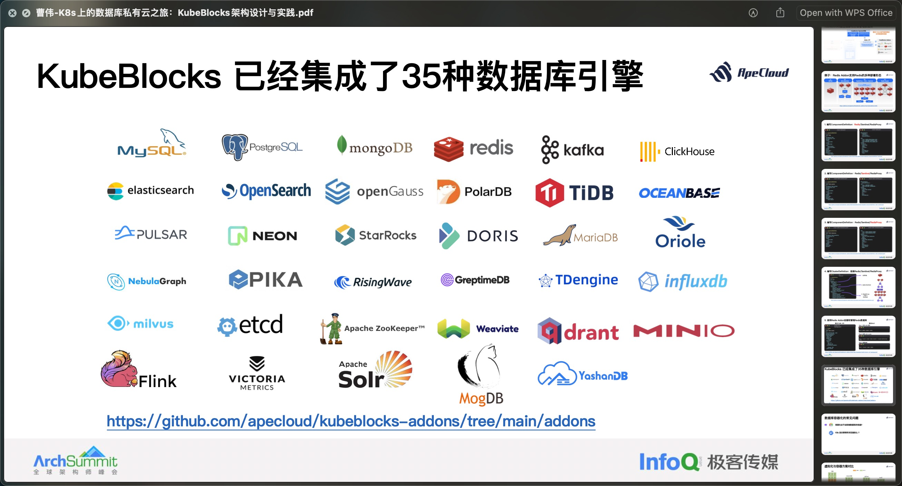
</div></script></section></section><section ><section data-markdown><script type="text/template"><!-- .slide: class="drop" template="" -->
<div class="" style="position: absolute; left: 0px; top: 0px; height: 800px; width: 1280px; min-height: 800px; display: flex; flex-direction: column; align-items: center; justify-content: center" absolute="true">

# 2. [高可用架构实现](https://archsummit.infoq.cn/2024/shenzhen/track/1642)


[RTC 场景下高可用云边通信实践](https://archsummit.infoq.cn/2024/shenzhen/presentation/5761) 游望秋
- 字节跳动 /视频架构/智能组网负责人

[爆发式增长业务的高可用架构优化之路](https://archsummit.infoq.cn/2024/shenzhen/presentation/5820) 邓学祥
- 高德地图 /架构师

[弹性可伸缩海量工作流引擎建设实践](https://archsummit.infoq.cn/2024/shenzhen/presentation/5745) 叶彬
- 腾讯 /星星海实验室架构师
</div></script></section><section data-markdown><script type="text/template"><!-- .slide: class="drop" template="" -->
<div class="" style="position: absolute; left: 0px; top: 0px; height: 800px; width: 1280px; min-height: 800px; display: flex; flex-direction: column; align-items: center; justify-content: center" absolute="true">

## 业界常⻅的云边通信⽅案

⽀持通过QUIC等协议提⾼云边通道的可靠性

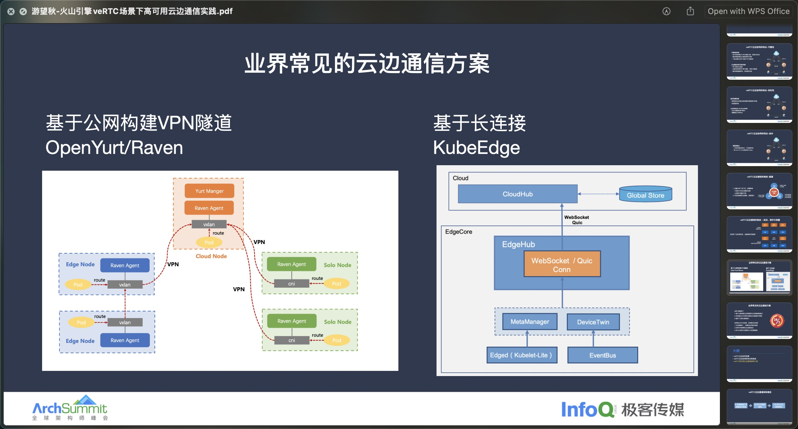
</div></script></section><section data-markdown><script type="text/template"><!-- .slide: class="drop" template="" -->
<div class="" style="position: absolute; left: 0px; top: 0px; height: 800px; width: 1280px; min-height: 800px; display: flex; flex-direction: column; align-items: center; justify-content: center" absolute="true">

### v3 去中⼼化⽹格架构 — 云端故障容错

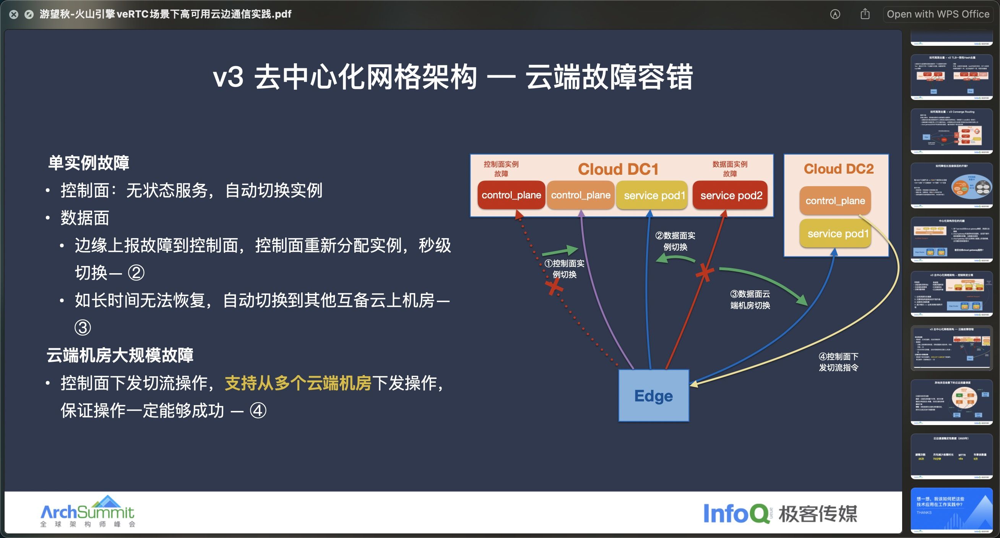
</div></script></section><section data-markdown><script type="text/template"><!-- .slide: class="drop" template="" -->
<div class="" style="position: absolute; left: 0px; top: 0px; height: 800px; width: 1280px; min-height: 800px; display: flex; flex-direction: column; align-items: center; justify-content: center" absolute="true">

# 工作流引擎调研

将任务实现与任务协作关系分离之后，就诞生了专门维护任务协作关系的程序 - 工作流引擎

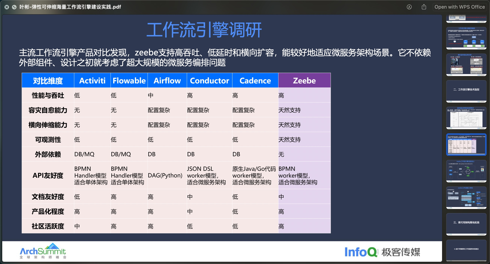
</div></script></section><section data-markdown><script type="text/template"><!-- .slide: class="drop" template="" -->
<div class="" style="position: absolute; left: 0px; top: 0px; height: 800px; width: 1280px; min-height: 800px; display: flex; flex-direction: column; align-items: center; justify-content: center" absolute="true">

## zeebe 工作流引擎顶层设计

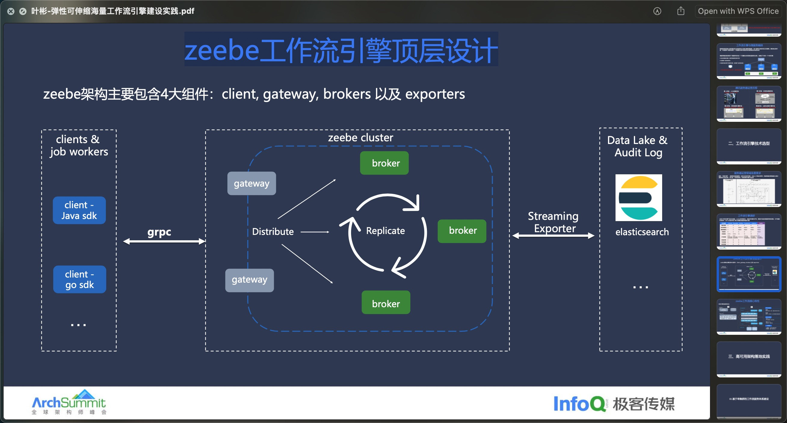
</div></script></section></section><section ><section data-markdown><script type="text/template"><!-- .slide: class="drop" template="" -->
<div class="" style="position: absolute; left: 0px; top: 0px; height: 800px; width: 1280px; min-height: 800px; display: flex; flex-direction: column; align-items: center; justify-content: center" absolute="true">

# 3. 智算平台

[大模型场景下智算平台的设计与优化实践](https://archsummit.infoq.cn/2024/shenzhen/presentation/5942) 肖松
- 百度 /混合云部资深技术专家

[大规模智算集群的管理与性能调优实践](https://archsummit.infoq.cn/2024/shenzhen/presentation/5878) 黄坚
- 天翼云 /云网产品事业部研发专家

[大模型时代的AI能力工程化](https://archsummit.infoq.cn/2024/shenzhen/presentation/5793) 肖然
- Thoughtworks /全球数字化转型专家
</div>

<aside class="notes"><p><a href="https://archsummit.infoq.cn/2024/shenzhen/track/1637">智算平台建设与应用实践</a></p>
</aside></script></section><section data-markdown><script type="text/template"><!-- .slide: class="drop" template="" -->
<div class="" style="position: absolute; left: 0px; top: 0px; height: 800px; width: 1280px; min-height: 800px; display: flex; flex-direction: column; align-items: center; justify-content: center" absolute="true">

### 待解决问题

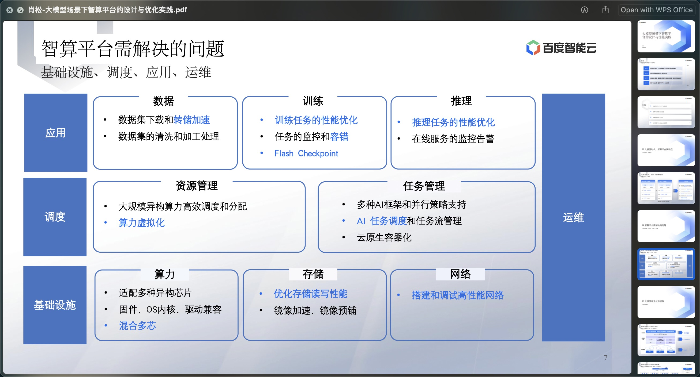
</div></script></section><section data-markdown><script type="text/template"><!-- .slide: class="drop" template="" -->
<div class="" style="position: absolute; left: 0px; top: 0px; height: 800px; width: 1280px; min-height: 800px; display: flex; flex-direction: column; align-items: center; justify-content: center" absolute="true">

### 智算平台架构
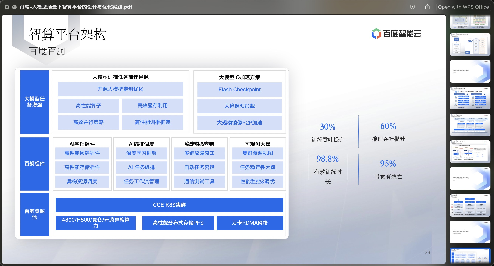
</div></script></section><section data-markdown><script type="text/template"><!-- .slide: class="drop" template="" -->
<div class="" style="position: absolute; left: 0px; top: 0px; height: 800px; width: 1280px; min-height: 800px; display: flex; flex-direction: column; align-items: center; justify-content: center" absolute="true">

### 智算集群工程化交付
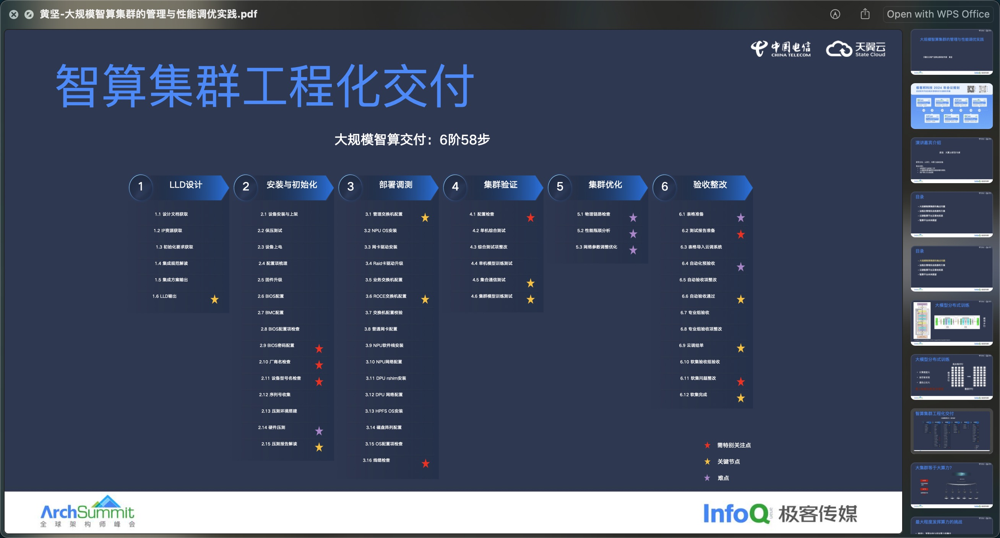
</div></script></section><section data-markdown><script type="text/template"><!-- .slide: class="drop" template="" -->
<div class="" style="position: absolute; left: 0px; top: 0px; height: 800px; width: 1280px; min-height: 800px; display: flex; flex-direction: column; align-items: center; justify-content: center" absolute="true">

### 智算工程关注点

性能与稳定
- 数万卡集群的算力加速  
- 百万级元器件的故障快速恢复

开箱即用
- 数百项的基础组件的自动化交付 
- 降低训练、推理工具使用门槛

国产化
- 非CUDA生态的技术路线演进 
- 大模型训推最佳实践
</div></script></section><section data-markdown><script type="text/template"><!-- .slide: class="drop" template="" -->
<div class="" style="position: absolute; left: 0px; top: 0px; height: 800px; width: 1280px; min-height: 800px; display: flex; flex-direction: column; align-items: center; justify-content: center" absolute="true">

### AI 模型难治理

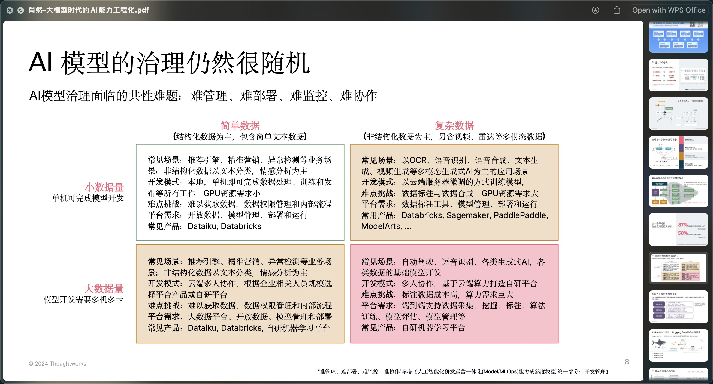
</div></script></section><section data-markdown><script type="text/template"><!-- .slide: class="drop" template="" -->
<div class="" style="position: absolute; left: 0px; top: 0px; height: 800px; width: 1280px; min-height: 800px; display: flex; flex-direction: column; align-items: center; justify-content: center" absolute="true">

### 借鉴 Hugging Face

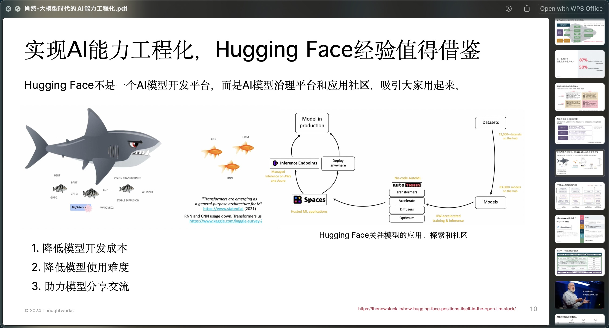
</div>

<aside class="notes"><p><a href="https://thenewstack.io/how-hugging-face-positions-itself-in-the-open-llm-stack/">https://thenewstack.io/how-hugging-face-positions-itself-in-the-open-llm-stack/</a></p>
</aside></script></section></section><section ><section data-markdown><script type="text/template"><!-- .slide: class="drop" template="" -->
<div class="" style="position: absolute; left: 0px; top: 0px; height: 800px; width: 1280px; min-height: 800px; display: flex; flex-direction: column; align-items: center; justify-content: center" absolute="true">

# 4. [LLM as OS 探索](https://archsummit.infoq.cn/2024/shenzhen/track/1649)

[AI是协作者，而非替代者：AI高效协作开发](https://archsummit.infoq.cn/2024/shenzhen/presentation/5979) Scott Shaw
- Thoughtworks /亚太区 CTO

### AI-first software development by Scott Shaw
1. Generative AI is poised to transform software delivery
1. Obsessing on coding assistants is a distraction
1. The real revolution will come when teams use AI to augment their collective knowledge of the business
</div></script></section><section data-markdown><script type="text/template"><!-- .slide: class="drop" template="" -->
<div class="" style="position: absolute; left: 0px; top: 0px; height: 800px; width: 1280px; min-height: 800px; display: flex; flex-direction: column; align-items: center; justify-content: center" absolute="true">

### Software lifecycle

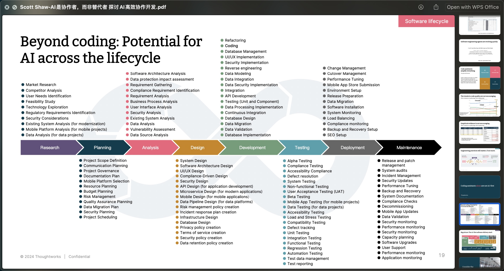
</div></script></section></section><section ><section data-markdown><script type="text/template"><!-- .slide: class="drop" template="" -->
<div class="" style="position: absolute; left: 0px; top: 0px; height: 800px; width: 1280px; min-height: 800px; display: flex; flex-direction: column; align-items: center; justify-content: center" absolute="true">

# 5. [高效算力基建](https://archsummit.infoq.cn/2024/shenzhen/track/1639)

[EventMesh Function：面向事件流处理的 Serverless 新火花](https://archsummit.infoq.cn/2024/shenzhen/presentation/5862)
- 陈广胜 微众银行 /资深技术专家

[如何稳定高效的利用 Kubernetes 集群资源](https://archsummit.infoq.cn/2024/shenzhen/presentation/5868) 李鹤
- Shopee /云原生技术专家

[快手 CPU&GPU 超大规模在离线混部落地实践](https://archsummit.infoq.cn/2024/shenzhen/presentation/5874) 辛文
- 快手 /容器云技术中心/容器混部技术专家

[B站容器平台混部和容量管理实践](https://archsummit.infoq.cn/2024/shenzhen/presentation/5894) 许龙
- 哔哩哔哩 /基础架构部资深工程师
</div></script></section><section data-markdown><script type="text/template"><!-- .slide: class="drop" template="" -->
<div class="" style="position: absolute; left: 0px; top: 0px; height: 800px; width: 1280px; min-height: 800px; display: flex; flex-direction: column; align-items: center; justify-content: center" absolute="true">

### Kubernetes 集群资源

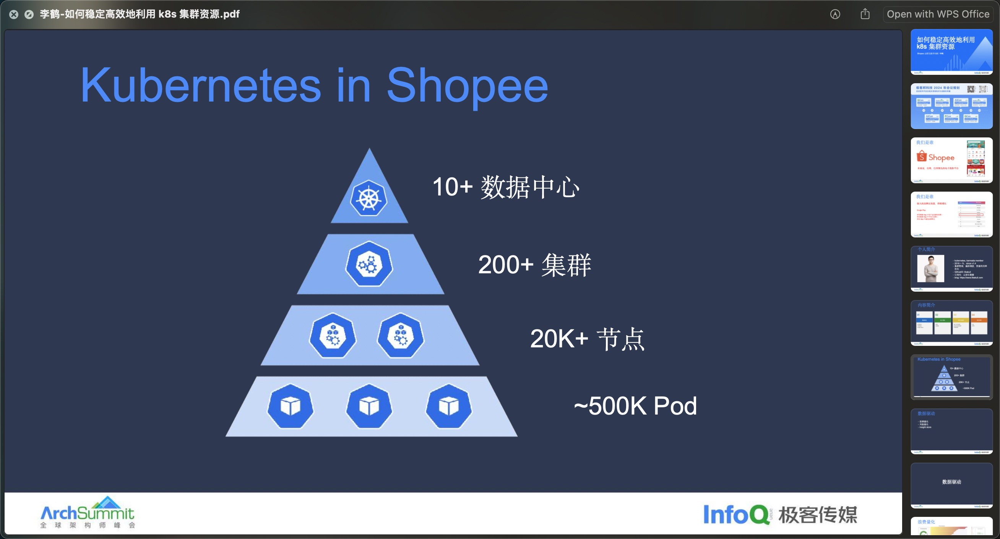
</div></script></section><section data-markdown><script type="text/template"><!-- .slide: class="drop" template="" -->
<div class="" style="position: absolute; left: 0px; top: 0px; height: 800px; width: 1280px; min-height: 800px; display: flex; flex-direction: column; align-items: center; justify-content: center" absolute="true">

### 差异化 SLO 混部

不同的服务或应用可能有不同的服务级别目标（SLO），例如响应时间、可用性、吞吐量等。

在同一个物理或虚拟资源上同时运行多个不同的应用或服务。目的是最大化资源利用率，同时满足每个应用的性能需求。
</div></script></section><section data-markdown><script type="text/template"><!-- .slide: class="drop" template="" -->
<div class="" style="position: absolute; left: 0px; top: 0px; height: 800px; width: 1280px; min-height: 800px; display: flex; flex-direction: column; align-items: center; justify-content: center" absolute="true">

### GPU 混合部署

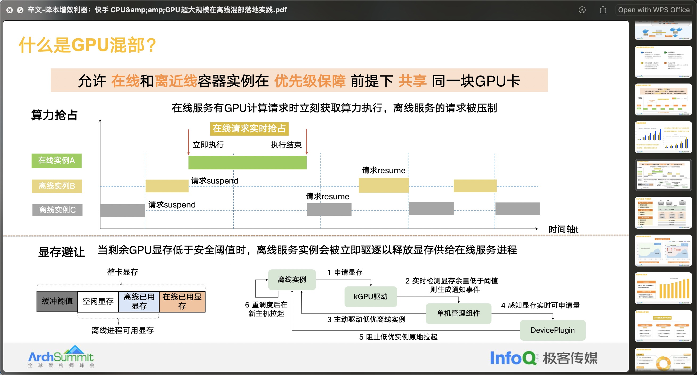
</div></script></section><section data-markdown><script type="text/template"><!-- .slide: class="drop" template="" -->
<div class="" style="position: absolute; left: 0px; top: 0px; height: 800px; width: 1280px; min-height: 800px; display: flex; flex-direction: column; align-items: center; justify-content: center" absolute="true">

### B站容器平台架构

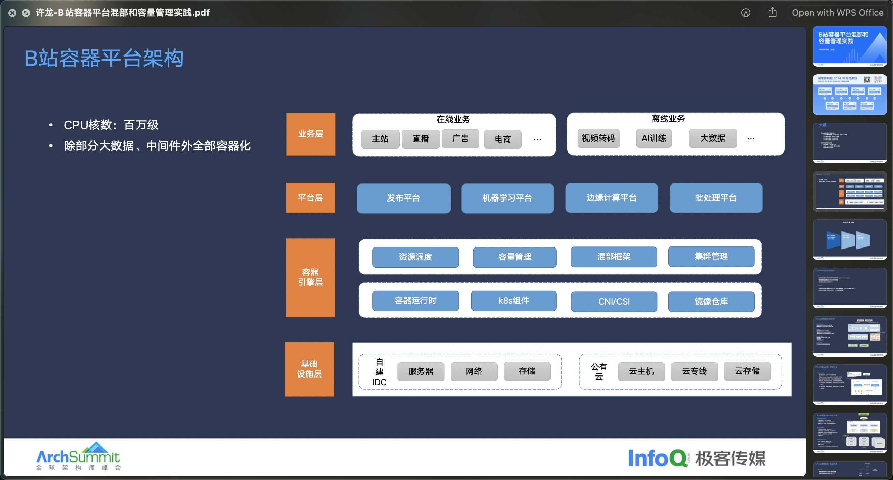
</div></script></section><section data-markdown><script type="text/template"><!-- .slide: class="drop" template="" -->
<div class="" style="position: absolute; left: 0px; top: 0px; height: 800px; width: 1280px; min-height: 800px; display: flex; flex-direction: column; align-items: center; justify-content: center" absolute="true">

### GPU混部-vGPU调度

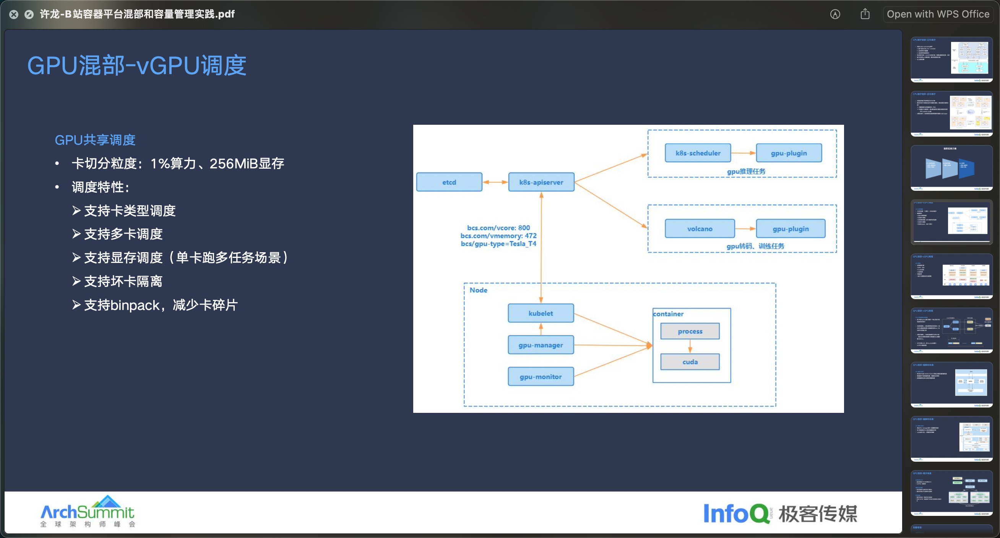
</div></script></section><section data-markdown><script type="text/template"><!-- .slide: class="drop" template="" -->
<div class="" style="position: absolute; left: 0px; top: 0px; height: 800px; width: 1280px; min-height: 800px; display: flex; flex-direction: column; align-items: center; justify-content: center" absolute="true">

### GPU混部-vGPU隔离

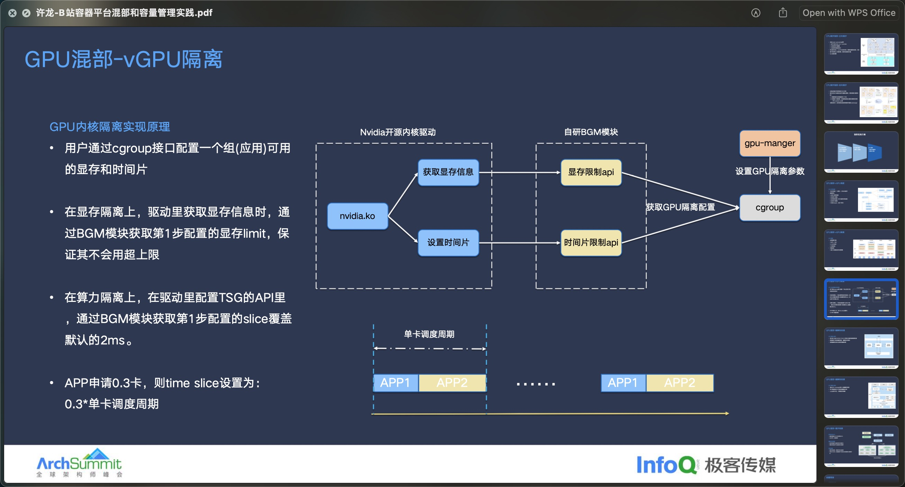
</div></script></section><section data-markdown><script type="text/template"><!-- .slide: class="drop" template="" -->
<div class="" style="position: absolute; left: 0px; top: 0px; height: 800px; width: 1280px; min-height: 800px; display: flex; flex-direction: column; align-items: center; justify-content: center" absolute="true">

### 容量管理-可视化

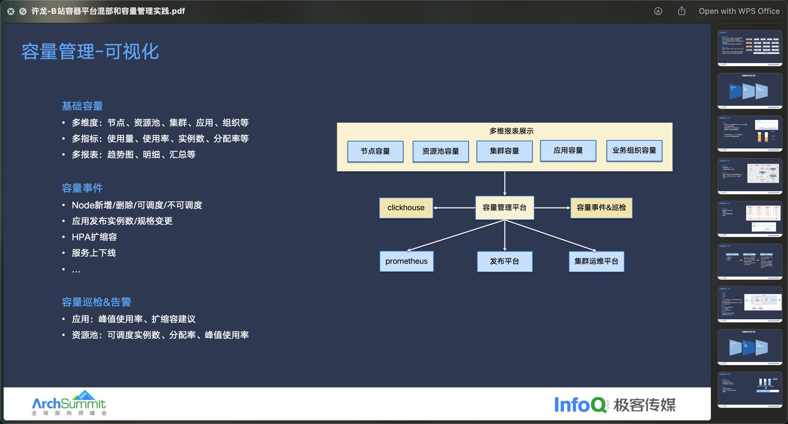
</div></script></section></section><section ><section data-markdown><script type="text/template"><!-- .slide: class="drop" template="" -->
<div class="" style="position: absolute; left: 0px; top: 0px; height: 800px; width: 1280px; min-height: 800px; display: flex; flex-direction: column; align-items: center; justify-content: center" absolute="true">

# Reference


- 

<div class="footnotes" role="doc-endnotes">
<ol>
<li id="fn:schedule" role="doc-endnote" class="footnote"><p>

https://archsummit.infoq.cn/2024/shenzhen/schedule

</p></li><li id="fn:keynote" role="doc-endnote" class="footnote"><p>

https://archsummit.infoq.cn/2024/shenzhen/track/1674

</p></li></ol>
</div>
</div></script></section><section data-markdown><script type="text/template"><!-- .slide: class="drop" data-background-gradient="radial-gradient(circle at top right, #2C5364, #203A43, #0F2027)" data-background-opacity="0.2" -->
<div class="" style="position: absolute; left: 0px; top: 0px; height: 800px; width: 1280px; min-height: 800px; display: flex; flex-direction: column; align-items: center; justify-content: center" absolute="true">

<div class="" style="padding: 5; box-sizing: border-box; position: absolute; left: 50%; top: 0%; height: 100%; width: 50%; display: flex; flex-direction: column; align-items: center; justify-content: center" >


</div>

<div class="" style="position: absolute; left: 0%; top: 0%; height: 100%; width: 80%; display: flex; flex-direction: column; align-items: center; justify-content: center" >

</img>

## 感谢您的观看！

不要忘了一键三连噢～🩷 ⭐️ 📝
</div>
</div>

<aside class="notes"><ol>
<li>还有更多内容，请关注 all in obsidian 账号后查看；</li>
<li>喜欢这篇笔记，请点赞、收藏、评论 三连；</li>
<li>感谢您的观看！</li>
</ol>
</aside></script></section></section></div>
    </div>

    <script src="dist/reveal.js"></script>
    <script src="plugin/notes/notes.js"></script>
    <script src="plugin/markdown/markdown.js"></script>
    <script src="plugin/highlight/highlight.js"></script>

    <script src="plugin/zoom/zoom.js"></script>
    <script src="plugin/math/math.js"></script>
    <script src="plugin/mermaid/mermaid.js"></script>
    <script src="plugin/chart/chart.min.js"></script>
    <script src="plugin/chart/plugin.js"></script>
    <script src="plugin/customcontrols/plugin.js"></script>

    <script>
        function extend() {
            const target = {};
            for (let i = 0; i < arguments.length; i++) {
                const source = arguments[i];
                for (const key in source) {
                    if (source.hasOwnProperty(key)) {
                        target[key] = source[key];
                    }
                }
            }
            return target;
        }

        function isLight(color) {
            let hex = color.replace('#', '');

            // convert #fff => #ffffff
            if (hex.length == 3) {
                hex = `${hex[0]}${hex[0]}${hex[1]}${hex[1]}${hex[2]}${hex[2]}`;
            }

            const c_r = parseInt(hex.substr(0, 2), 16);
            const c_g = parseInt(hex.substr(2, 2), 16);
            const c_b = parseInt(hex.substr(4, 2), 16);
            const brightness = ((c_r * 299) + (c_g * 587) + (c_b * 114)) / 1000;
            return brightness > 155;
        }

        const bgColor = getComputedStyle(document.documentElement).getPropertyValue('--r-background-color').trim();

        if (isLight(bgColor)) {
            document.body.classList.add('has-light-background');
        } else {
            document.body.classList.add('has-dark-background');
        }

        // default options to init reveal.js
        const defaultOptions = {
            controls: true,
            progress: true,
            history: true,
            center: true,
            transition: 'default', // none/fade/slide/convex/concave/zoom
            plugins: [
                RevealMarkdown,
                RevealHighlight,
                RevealZoom,
                RevealNotes,
                RevealMath.MathJax3,
                RevealMermaid,
                RevealChart,
                RevealCustomControls,
            ],
            allottedTime: 120 * 1000,
            mathjax3: {
                mathjax: 'plugin/math/mathjax/tex-mml-chtml.js',
            },
            markdown: {
                gfm: true,
                mangle: true,
                pedantic: false,
                smartLists: false,
                smartypants: false,
            },
            mermaid: {
                theme: isLight ? 'default' : 'dark',
            },
            customcontrols: {
                controls: [
                ]
            },
        };

        if ( pageInIframe() ) {
            defaultOptions.scrollActivationWidth = 5;
        }

        // options from URL query string
        const queryOptions = Reveal().getQueryHash() || {};

        const options = extend(defaultOptions, {"controls":true,"progress":false,"slideNumber":true,"center":true,"transition":"slide","transitionSpeed":"normal","width":1280,"height":800,"margin":0.04,"controlsLayout":"edges","loop":false,"showNotes":false}, queryOptions);
    </script>

    <script>
      Reveal.initialize(options);
    </script>
</body>

<!-- created with Slides Extended -->
</html>
